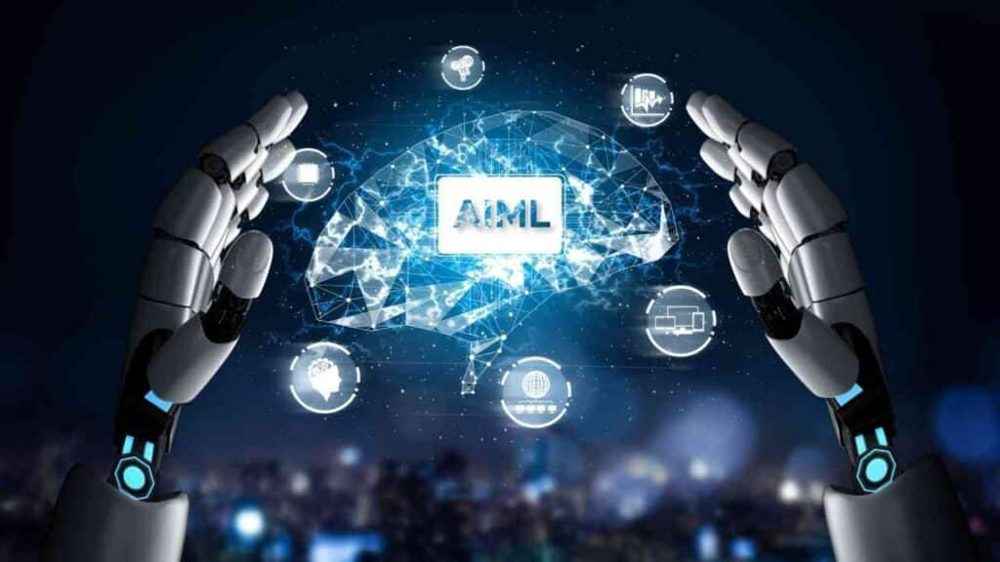
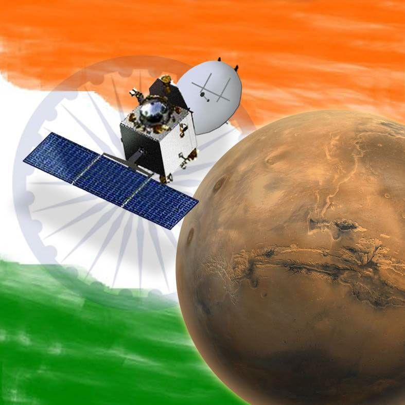
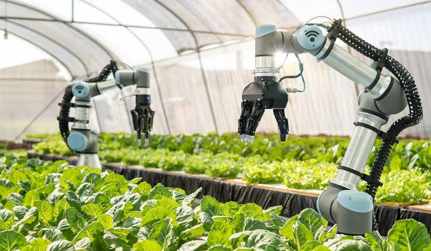
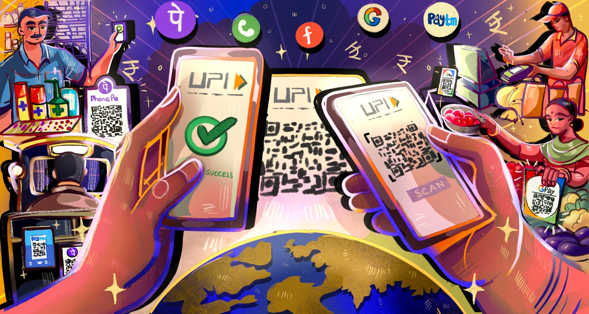

Innovation
Digital Dreams of a New India
Digital Dreams of a New India
Smarter Technology for a Smarter World

-
Artificial Intelligence (AI) enables machines to mimic human intelligence.
- Machine Learning (ML) is a subset of AI that allows systems to learn from data and improve over time without being explicitly programmed.
- AI and ML algorithms analyze massive amounts of data to identify patterns and make accurate predictions or recommendations,
often better and faster than humans.
- AI powers tools like chatbots, voice assistants (e.g., Alexa, Siri), and language translation apps using NLP, enabling machines to
understand and respond to human language.
- ML models improve over time as they are exposed to more data. This self-learning ability makes them valuable for dynamic environments and evolving problems.
- AI and ML automate repetitive tasks, reduce human error, and increase productivity in areas like customer service, manufacturing, and logistics.
India’s Gateway to Space Exploration

-
ISRO was established on August 15, 1969, to advance India’s space program under the vision of Dr. Vikram Sarabhai, the father of Indian space research.
- ISRO is known for executing space missions at remarkably low costs. For example, the Mars Orbiter Mission (Mangalyaan) cost just around $74
million, far less than similar missions by other countries.
- India's lunar missions, Chandrayaan-1 (2008) and Chandrayaan-3 (2023), explored the Moon. Chandrayaan-3 made India the first country to land near the Moon’s south pole.
- Launched in 2013, this was India’s first interplanetary mission and made ISRO the fourth space agency in the world to reach Mars, and the first to do it on the first attempt.
- The Polar Satellite Launch Vehicle (PSLV) is one of the most reliable rockets in the world, used to launch satellites into space for both India and other countries.
- ISRO has earned worldwide respect for its scientific achievements, innovation, and efficient use of resources, making India a key player in the global space industry.
Smart Farming Stronger India

-
Agritech refers to the use of technology and innovation in agriculture to improve productivity, efficiency, and sustainability across the farming process.
- Smart farming involves using IoT sensors, drones, AI, data analytics, and automation to make farming more precise, data-driven, and efficient.
- With GPS, satellite imagery, and sensors, precision agriculture allows farmers to monitor soil, water, and crop health at a micro-level, reducing
waste and maximizing yields.
- IoT devices collect real-time data on soil moisture, temperature, humidity, and crop conditions,
enabling smarter irrigation and timely interventions.
- Drones are used to monitor large farmlands, detect diseases, assess plant health, and even
spray fertilizers or pesticides, saving time and resources.
- Robots and autonomous tractors are being used to sow seeds, weed, harvest crops, and perform other
labor-intensive tasks with minimal human effort.
Digital India Begins with UPI

-
UPI allows instant money transfers between bank accounts 24/7, including on weekends and holidays.
Transactions are processed in real-time.
- Users can link multiple bank accounts to a single UPI app, enabling seamless access and control over all their accounts in one place.
- Payments can be made using just a UPI ID, mobile number, or QR code—no need to remember bank details. UPI uses 2-factor authentication,
making it safe and secure.
- UPI is used for person-to-person (P2P) payments, merchant transactions, bill payments, subscriptions, donations, and even investments.
- UPI was developed by NPCI (National Payments Corporation of India) and has become a model for real-time digital payment systems around the world.
- UPI is free or very low-cost for users, helping promote financial inclusion by enabling even small businesses and individuals to participate in the digital economy without extra charges.